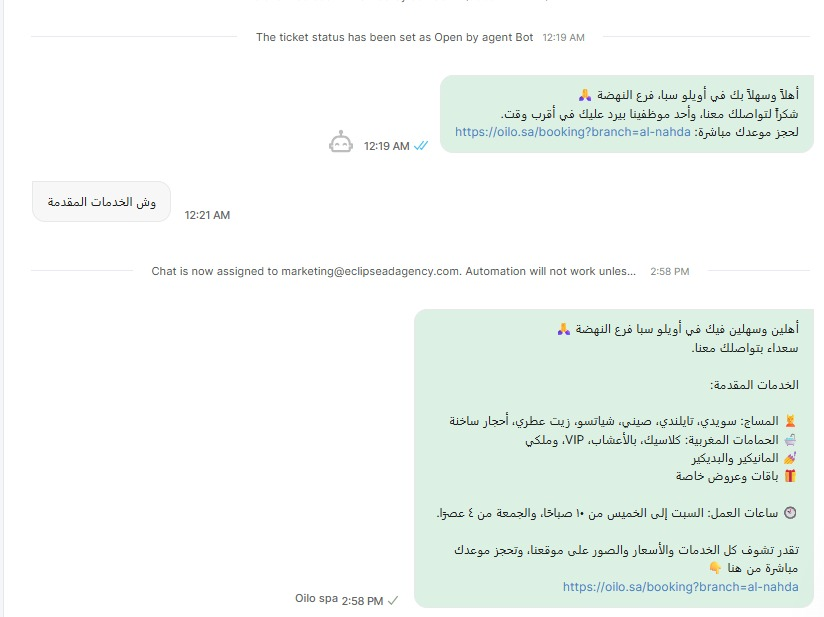

يوثّق هذا التقرير ما نُفّذ على منظومة أويلو الرقمية خلال الربع الثاني (أبريل إلى يونيو ٢٠٢٦): إضافة فرع النهضة إلى بنية الموقع متعددة الفروع، إطلاق إعلانات جوجل وتجهيز بقية المنصات للإطلاق، واستمرار الحجوزات العضوية من بحث جوجل. الأرقام أدناه مستخرجة مباشرةً من قاعدة بيانات الحجز.
أُعيد بناء الموقع على بنية متعددة الفروع. لكل فرع صفحة هبوط مستقلة، عنوان وساعات وإحداثيات وخريطة ورقم واتساب خاص، وسعة حجز محسوبة على حدة، وبيانات LocalBusiness منفصلة تربطه بموقعه الجغرافي في نتائج البحث.
صفحة هبوط مستقلة لكل فرع (/al-rabie و /al-nahda) مع صور المكان، الخدمات، الموقع على الخريطة، الساعات، ورقم واتساب خاص. يصل الزائر مباشرةً إلى فرعه الأقرب دون ازدحام في الرسالة.
سعة الحجز محسوبة لكل فرع على حدة، فامتلاء مواعيد فرعٍ لا يحجب الآخر. بيانات JSON-LD منفصلة لكل موقع تجعل جوجل يعرض الفرع الصحيح حسب موقع الباحث الجغرافي في الرياض.
كل الأرقام التالية مستخرجة مباشرةً من قاعدة بيانات الحجز على الموقع خلال الربع الثاني (أبريل إلى يونيو). المنحنى واضح: تزامن إطلاق إعلانات جوجل في مايو مع ارتفاع الحجوزات إلى نحو سبعة أضعاف.
عدد الحجوزات الإلكترونية المسجّلة شهرياً عبر oilo.sa
دخول فرعٍ جديد إلى منظومة أويلو الرقمية يعني أكثر من إضافة عنوان. بنينا لفرع النهضة حضوراً كاملاً يطابق فخامة فرع الربيع، جاهزاً لاستقبال أول عملائه.
قسم بطل بصور المكان الجديد، الخدمات والأسعار، قسم الأجواء، والتقييمات، بنفس الهوية الذهبية على الأسود التي تميّز العلامة.
العنوان على شارع سلمان الفارسي بحي النهضة، مثبّت على خرائط جوجل بإحداثيات دقيقة، مع ساعات عمل الفرع الخاصة (١٠ صباحاً حتى ٦ صباحاً) ورقم واتساب مستقل.
إضافة الفرع إلى خرائط جوجل (Google Business) بصوره ومعلوماته، مع بيانات LocalBusiness منظّمة وإدراجه في خريطة الموقع وروابط اللغتين، ليظهر أمام الباحثين في محيطه الجغرافي.
معالجة صور الفرع الجديد وتحسينها للويب بصيغ حديثة سريعة التحميل، لاستخدامها على الموقع وخرائط جوجل وملف الواتساب التجاري.
محتوى منتظم على مدار الربع بهوية أويلو الفاخرة: الذهبي على الأسود، تايبوغرافي عربي راقٍ، وتصوير حقيقي للمكان. جدول نشر ثابت لكل فرع عبر أربع منصات.
نلتزم بجدول نشر ٥ أيام في الأسبوع لكل فرع على حدة، بمحتوى موحّد الهوية مع تمييز كل فرع بموقعه ورقم تواصله في الدعوات إلى الحجز، موزّعاً على المنصات الأربع التالية:
لإنتاج ريلز احترافية لكل فرع، نحتاج لقطات فيديو خام من داخل فرع الربيع و فرع النهضة: الاستقبال، الغرف، الأجواء، وأثناء الخدمات. كلما توفّرت مادة أكثر، زاد عدد الريلز وجودتها لكل فرع.
ربطنا واتساب الفرعين بمنصّة WATI لتحويل كل محادثة إلى حجز: ردّ آلي فوري، توجيه للموظف المختص، وقوالب جاهزة بالخدمات والأسعار، مع رابط حجز يفتح الفرع الصحيح مباشرةً.

حساب دخول مستقل على لوحة الإدارة (oilo.sa/admin) لكل فرع، ليتابع مسؤول الفرع حجوزاته أولاً بأول من الجوال أو المتصفّح.
تنبيه بريدي للفرع عند كل حجز جديد، يصل مباشرةً إلى بريد الفرع دون الحاجة لفتح اللوحة، ليرى الفريق الحجز لحظة وصوله.
نظام WATI مُفعَّل على فرع النهضة. ولإضافة فرع الربيع نحتاج رقم جوال جديداً غير مُسجَّل على واتساب (شرط أساسي لتفعيل واتساب الأعمال على المنصة). فور توفّره نُفعّل الردّ الآلي ورابط الحجز الخاص بفرع الربيع خلال وقتٍ قصير.
أُطلقت إعلانات جوجل لأويلو خلال الربع، وهي القناة المدفوعة الوحيدة العاملة حتى الآن. أمّا منصّتا Meta و TikTok فجاهزتان بالكامل (حسابات إعلانية مُنشأة ومُوثّقة) بانتظار اعتماد العميل لإطلاقهما.
حملات بحث على Google Ads تستهدف الباحثين عن سبا ومساج للرجال في الرياض، وتقود الزائر مباشرةً إلى صفحة الحجز. تزامن إطلاقها مع ارتفاع الحجوزات في مايو.
الحساب الإعلاني على Meta مُنشأ ومُوثّق وجاهز لحملات إنستغرام وفيسبوك باستهداف جغرافي حول كل فرع. لم تُطلَق بعد، بانتظار موافقة العميل.
الحساب الإعلاني على TikTok مُنشأ ومُوثّق وجاهز للإطلاق باستهداف الرياض فور توفّر مادة الفيديو وموافقة العميل.
جميع الحسابات الإعلانية (جوجل، Meta، TikTok) مُنشأة ومُوثّقة وجاهزة للإطلاق، إلى جانب بحث جوجل العضوي الذي يولّد نحو ثلث الحجوزات (١٦ من ٤٦) دون تكلفة. الإطلاق الكامل يتم فور الاعتماد دون إعداد إضافي.
أولويات الربع القادم مرتبطة بقرار تشغيل الإعلانات: إطلاق حملات Meta و TikTok و Snapchat عند اعتماد العميل، توسيع الاستهداف لفرع النهضة، تفعيل قاعدة العملاء عبر الواتساب، وفصل تقارير الأداء لكل فرع.
فور اعتماد العميل، إطلاق حملات Meta و TikTok و Snapchat لتغطية أوسع جمهور رجالي في الرياض، إلى جانب إعلانات جوجل العاملة، مع قياس الحجوزات لكل قناة.
حملات مخصّصة باستهداف جغرافي حول حي النهضة، مع قياس الحجوزات لكل فرع على حدة لمقارنة أداء الفرعين.
تجزئة قاعدة العملاء التي تكوّنت خلال الربع حسب الفرع وآخر زيارة، وإرسال عروض وتذكيرات عبر قوالب رسمية معتمدة.
فصل الحجوزات ومصادرها والخدمات الأكثر طلباً لكل فرع، وقياس عائد كل ريال إعلاني عند إعادة تشغيل الحملات.
شكراً لثقتكم بفريق إكليبس. أضاف الربع الثاني فرع النهضة إلى المنظومة الرقمية، وأطلق إعلانات جوجل، إلى جانب مصدرٍ عضويٍّ مستقرّ من بحث جوجل.
منصّتا Meta و TikTok جاهزتان وموثّقتان بانتظار اعتمادكم لإطلاقهما، مع حملات واتساب وتقارير مفصولة لكل فرع في الربع القادم.